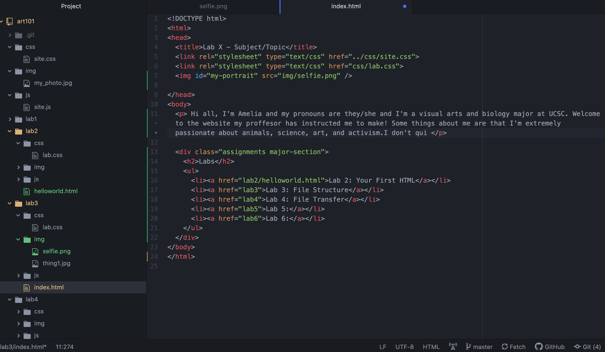
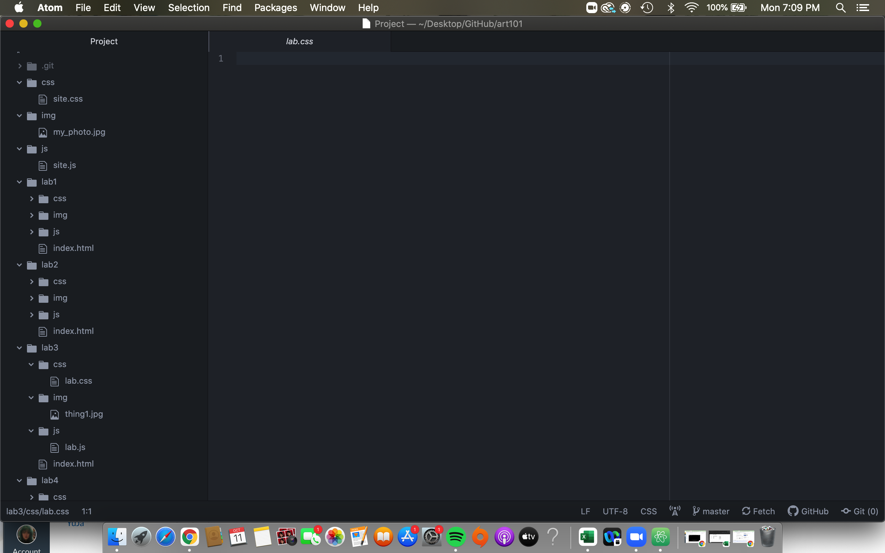
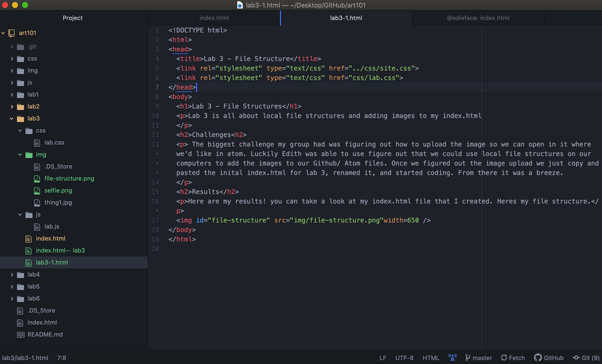
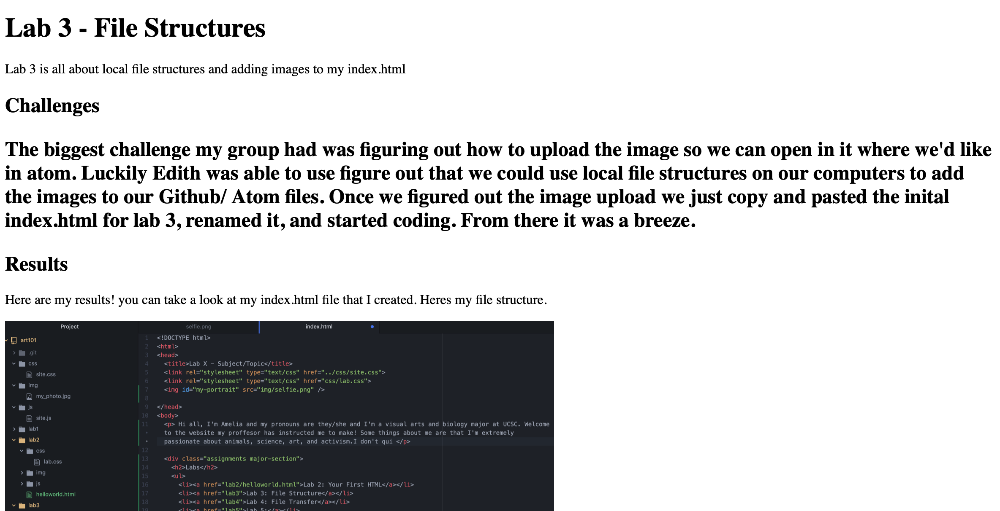

Lab 3 is all about local file structures and adding images to my index.html
The biggest challenge my group had was figuring out how to upload the image so we can open in it where we'd like in atom. Luckily Edith was able to use figure out that we could use local file structures on our computers to add the images to our Github/ Atom files. Once we figured out the image upload we just copy and pasted the inital index.html for lab 3, renamed it, and started coding. From there it was a breeze.
Here are my results! you can take a look at my index.html file that I created. Heres my file structure.
Lab 3 Part One
Lab 3 Part Two
Lab 3 Part Three
